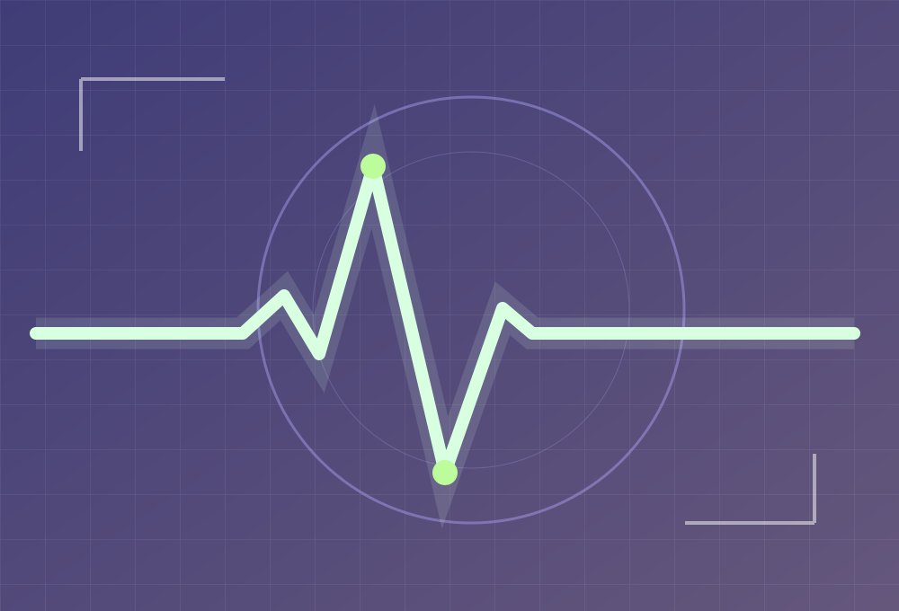

← TRỞ VỀ DANH MỤC DỰ ÁN
ĐỀ TÀI / 05 — TÍN HIỆU Y SINH / HỌC SÂU
Điện tâm đồ đa nguồn
Phát hiện rối loạn nhịp tim dựa trên dữ liệu ECG đa nguồn, chú trọng khả năng tổng quát hóa qua các tập dữ liệu khác nhau.
ECGRối loạn nhịp timHọc sâuĐa nguồn

TỔNG QUAN ĐỀ TÀI
Vấn đề &
hướng giải quyết.
Tiền xử lý tín hiệu, đồng bộ nhãn và so sánh các kiến trúc học sâu trên tín hiệu ECG.
Hướng nghiên cứu AI y sinh có khả năng tổng quát hóa và giải thích.
01
Chuẩn hóa dữ liệu ECG và vị trí đỉnh R
02
Đánh giá mô hình trên nhiều nguồn dữ liệu
03
Giải thích vùng tín hiệu ảnh hưởng đến dự đoán
Trang này giới thiệu định hướng nghiên cứu; hiện chưa có dữ liệu đo trực tiếp hoặc nút điều khiển thiết bị. Bảng điều khiển IoT có thể được tích hợp sau khi hoàn thiện xác thực và kết nối dữ liệu.
Quay lại danh mục